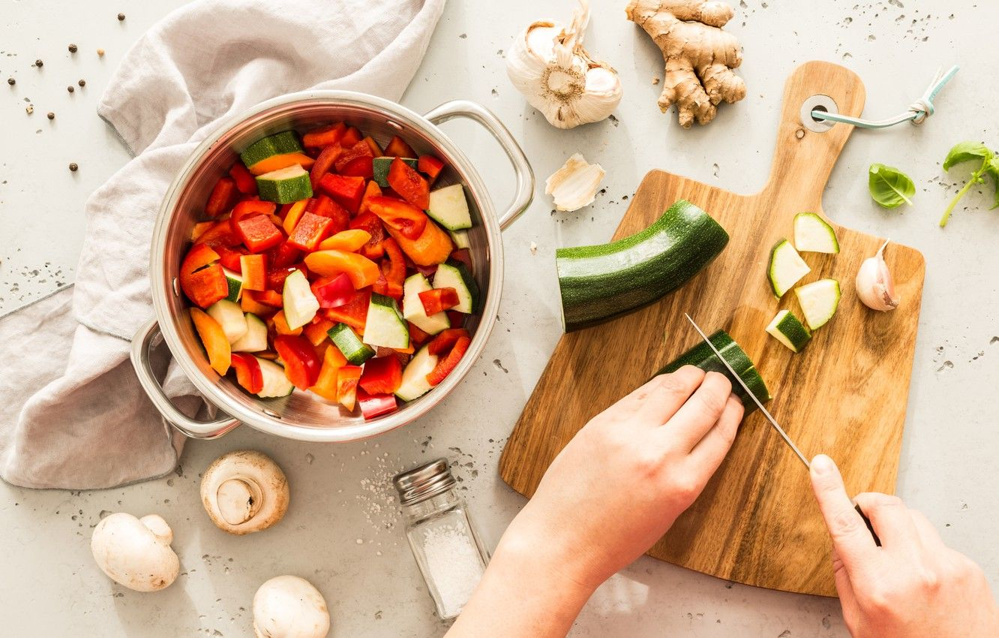

About my hobby
Cooking is an interesting hobby for many reasons. Getting to know the basics of cooking can be a great way to eat healthy. Cooking at home is more economical than eating out. Then there is the joy of cooking for your friends and family, trying new recipes and even coming up with your own. When you get a good foundation, and discover a passion for cooking, you could even consider a highly lucrative career as a chef or start your own business as a caterer. When we talk about cooking as a hobby, we mean learning all about cooking, types of cooking involved, how to shop for the ingredients, the utensils and supplies you need and actually doing everything from scratch. Cooking is a very useful hobby and today, it has evolved to such an extent that there is plenty of scope for creativity.
Tips And Tricks To Make Cooking As A Beginner More Exciting
Here are some valuable tips you could put to use as you learn to cook:- Stick to recipes that you enjoy, are simple to make and look great; Do not attempt something that you don’t relish eating.
- Spend some time with the recipe before you begin making it. This will help you list the ingredients and utensils you need and prepare properly.
- Measure your ingredients and keep them ready, just like in the cooking shows on TV. Why get stressed because you forgot to cut the vegetables or mince the garlic?
- Choose recipes that need just four or five ingredients and are easy to make and likely to turn out well.
- It is okay to make mistakes. Rome was not built in a day, as they say. Mistakes are your stepping stones to improvement.
- Use a cooking thermometer to check whether roasts, meats, etc. are heated to the right temperature.
- Use a timer if you cannot stay in the kitchen while your food is cooking.
- Avoid prepared food products since they can pile up the sugar, salt, calories and fat in your dishes. Instead, choose basic ingredients where you have a control over the sugar, salt and fat in the food.
- If you want to enroll in a cooking class in your area, or find someone who is willing to teach you, consider it.
- Enjoy the process of cooking and experiment.
- Be careful about food allergies and poisonous properties of certain ingredients before you cook them. Take care to ensure safety when you heat foods.